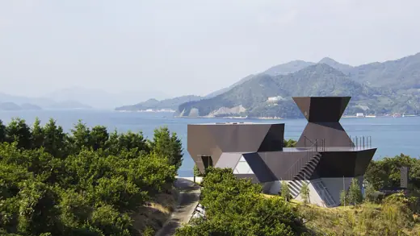

Toyo Ito buildings 19
Sort

Silver Hut1984 · Imabari Yatsushiro Municipal Museum1991 · Yatsushiro
Yatsushiro Municipal Museum1991 · Yatsushiro Sendai Mediatheque2001 · Sendai
Sendai Mediatheque2001 · Sendai Mikimoto Ginza 22005 · Tokyo
Mikimoto Ginza 22005 · Tokyo Meiso no Mori Municipal Funeral Hall2006 · Kakamigahara
Meiso no Mori Municipal Funeral Hall2006 · Kakamigahara Tama Art University Library2007 · Hachioji
Tama Art University Library2007 · Hachioji Za-Koenji Public Theatre2009 · Tokyo
Za-Koenji Public Theatre2009 · Tokyo College of Social Sciences, National Taiwan University (Koo Chen-Fu Memorial Library)2013 · Taipei
College of Social Sciences, National Taiwan University (Koo Chen-Fu Memorial Library)2013 · Taipei Minna no Mori Gifu Media Cosmos2015 · Gifu
Minna no Mori Gifu Media Cosmos2015 · Gifu National Taichung Theater2016 · Taichung
National Taichung Theater2016 · Taichung Tower of Winds1986 · Yokohama
Tower of Winds1986 · Yokohama Odate Jukai Dome1997 · Odate
Odate Jukai Dome1997 · Odate Matsumoto Performing Arts Centre2004 · Matsumoto
Matsumoto Performing Arts Centre2004 · Matsumoto Tod's Omotesando Building2004 · Tokyo
Tod's Omotesando Building2004 · Tokyo VivoCity2006 · Singapore
VivoCity2006 · Singapore National Stadium, Kaohsiung (World Games Stadium)2009 · Kaohsiung
National Stadium, Kaohsiung (World Games Stadium)2009 · Kaohsiung Toyo Ito Museum of Architecture2011 · Imabari
Toyo Ito Museum of Architecture2011 · Imabari CapitaGreen2014 · Singapore
CapitaGreen2014 · Singapore International Museum of the Baroque2016 · Puebla
International Museum of the Baroque2016 · Puebla